Vienkāršas pārbaudes - pirmais (sākuma) pārskats(pārbaude) par tīmekļa vietnes piekļūstamību/ Sākotnējs pārskats par tīmekļa piekļūstamību
( Ja var atkāpties: 10 vienkāršas pārbaudes piekļūstamības novērtēšanai
Vai tuvāk saturam: Vienkāršas pārbaudes - sākotnējs tīmekļa vietnes piekļūstamības pārskats
Ievads
Šī lapa palīdzēs jums uzsākt tīmekļa vietnes piekļūstamības novērtēšanu. Veicot šos vienkāršos soļus, jūs varēsiet noskaidrot, vai ievērotas piekļūstamības pamatprasības.
Pārbaužu piemērojamība/ Pārbaužu mērogs vai apjoms
Šīs pārbaudes aptver tikai dažus piekļūstamības aspektus. Tās ir paredzētas vienkārša un un ātra, nevis pilnīga novērtējuma veikšanai.Pat ja tīmekļa vietne atbilstu visām šīm prasībām, tajā joprojām var būt nozīmīgi šķēršļi piekļūstamībai. Lai iegūtu visaptverošu priekšstatu, būs nepieciešama pamatīgāka piekļūstamības izvērtēšana.
Lai iegūtu paslēpto informāciju, noklikšķiniet uz virsrakstiem ar [+] atzīmi
Dažas sadaļas šajā lapā var neattiekties uz jums, piemēram, tās var būt domātas pārlūkprogrammām, kuru jums nav, vai arī tās jums nepieciešams izlasīt tikai vienu reizi.
Lai nepārblīvētu šo lapu, šīs sadaļas pēc noklusējuma ir paslēptas. Jūs varat tās izvērst un aplūkot informāciju. Paslēpto sadaļu virsrakstiem ir atzīme [+]. Ekrānu lasītāji atskaņos aptuveni šādu informāciju: “grafika, izvērst šo sadaļu”. Lai iegūtu paslēpto informāciju, uzspiediet uz pogas vai jebkurā vietā uz virsraksta.
Visām zemāk atrodamajām sadaļām zem virsrakstiem ir paslēpta informācija. Pirmo reizi izmantojot šo lapu, aicinām izvērst visas sadaļas un izlasīt.
Rīki WebDev Toolbar un IE WAT
(pēcizvēles)
Vairumu pārbaužu varat veikt ar jebkuru pārlūkprogrammu, respektīvi, jums nav nepieciešams lejuplādēt īpašus rīkus.
Tomēr dažas pārbaudes ir vieglāk veikt ar lejuplādējamiem rīkiem. Lai būtu vienkāršāk, esam iekļāvuši instrukcijas tikai diviem rīkiem: Tīmekļa attīstītāju rīkjoslu (Web Developer Toolbar -WebDev Toolbar) - Chrome, Opera un Firefox lietotājiem un Tīmekļa vietņu piekļūstamības rīkjoslu (Web Accessibility Toolbar for Internet Explorer - IE WAT) Internet Explorer lietotājiem. Abi ir bezmaksas paplašinājumi/pievienojumprogrammas, un tie ir pieejami dažādās valodās.
WebDev Toolbar - Lai veiktu pārbaudi, kas apzīmēta ar WebDev Toolbar, jums būs nepieciešams:
Chrome parlūkprogramma un Chrome tīmekļa attīstītāja ( Web Developer) paplašinājums vai
Opera pārlūkprogramma un Opera tīmekļa attīstītāja ( Web Developer) paplašinājums, vai
Firefox pārlūkprogramma un Firefox tīmekļa attīstītāja ( Web Developer) paplašinājums/pievienojumprogramma.
IE WAT. Lai veiktu pārbaudi, kas atzīmēta ar IE WAT, jums būs nepieciešama 9. vai jaunāka Internet Explorer pārlūkprogrammas versija, kā arī Tīmekļa piekļūstamības rīkjoslas ( Web Accessibility Toolbar) 2013.gada 13. jūlija vai jaunāka versija.
Tīmekļa satura piekļūstamības vadlīniju saites saites
Šīs pārbaudes ir balstītas uz Tīmekļa satura piekļūstamības vadlīnijām 2.0 (Web Content Accessibility Guidelines ( WCAG)2.0.) Galvenie WCAG punkti tiek dēvēti par “Sekmīguma kritērijiem”. Šīs lapas ”Vairāk informācijas par” sadaļās ir saites uz lapām dokumentā “Skaidrojumi par WCAG 2.0.”, kas paskaidro ar aplūkotajām tēmām saistītos sekmīguma kritērijus.
Aicinām lasīt WCAG pārskatu, lai gūtu ieskatu tīmekļa satura piekļūstamības vadlīnijās.
Praktisku iemaņu gūšana ar PPD ( pirms un pēc demonstrācijas)
W3C WAI PPD rāda nepiekļūstamu tīmekļa vietni un tās pašas tīmekļa vietnes uzlabotu versiju, kurā ir novērsti šķēršļi piekļūstamībai. Jūs varat izmantot PPD lapas, lai apgūtu, kā veikt šīs pārbaudes. Piemēram, vispirms veiciet pārbaudes piekļūstamai lapas versijai, lai zinātu, kā tam būtu jāizskatās. Tad veiciet pārbaudi atbilstošai nepiekļūstamai lapai, lai redzētu, kā izskatās lapa aršķēršļiem piekļūstamībai.
PPD lapām ir anotācijas – piezīmes par to, kas ir piekļūstams un kas nav piekļūstams demonstrācijas lapās. Lai ieslēgtu anotācijas, noklikšķiniet uz Rādīt anotācijas (Show Annotations) dzeltenajā lodziņā lapas augšpusē, vidū. Tad klikšķiniet uz skaitļa un atvērsies lodziņš Piezīme## (Note ##) ar paskaidrojumu.
Fona informācija
Šīs pārbaudes ir piemērotas ikvienam tīmekļa lietotājam - jums nav nepieciešamas īpašas zināšanas vai prasmes. Lai veiktu dažas no pārbaudēm, ir nepieciešams redzēt tīmekļa lapu vai dzirdēt skaņu, tomēr virkni aspektuvar pārbaudīt jebkurš.
Informācija jūsu zināšanai, kas palīdzēs izprast īsos skaidrojumus šajā lapā:
atzīmes (markup) attiecas uz tīmekļa vietņu kodu, ko sauc par HTML. Tīmekļa lapas atzīmes var apskatīt lielākajā daļā pārlūkprogrammu, atlasot izvēlnē: Skatīt (View)> Avots (Source). Lai veiktu šīs pārbaudes, nav nepieciešams aplūkot atzīmes, taču tas palīdz saprast, ko nozīmē atzīmes (markup) un atzīmētās ( marked up).
palīgtehnoloģijas (assistive technologies ) ir programmatūra vai aparatūra, ko izmanto cilvēki ar invaliditāti, lai uzlabotu mijiedarbību ar tīmekli.
ekrāna lasītājs ir programmatūra, kas lasa balsī informāciju tīmekļa lapās un dod iespēju izmantot tastatūras navigāciju. To izmanto neredzīgi cilvēki.
balss ievade ir runas izmantošana tastūras vai peles vietā.
Tastatūras instrukcijas: Windows- Ctrl, MAC - cmd.
Dažas tastūras instrukcijas ir atšķirīgas Windows un MAC datoriem, piemēram, taustiņiem Ctrl un cmd:
Windows: ar tastatūru Ctrl+Alt+ 6, tad lejupvērstas bultiņas taustiņš uz Virsrakstu struktūra;
MAC: ar tastatūru cmd+ Alt+ 6, tad lejupvērstas bultiņas taustiņš uz Virsrakstu struktūra.
Lai nepārblīvētu saturu, šīs instrukcijas tiek pierakstītas sekojoši:
Ar tastatūru: Ctrl/cmd+Alt+6, tad lejupvērstas bultiņas taustiņš uz Virsrakstu struktūra.
Šādas instukcijas gadījumā Windows lietotājiem jāspiež taustiņš Ctrl, bet MAC lietotājiem jāizmanto taustiņš cmd.
Lapu nosaukums:
Lapu nosaukumi:
dažās pārlūkprogrammās tiek rādīti loga virsrakstjoslā;
tiek rādīti pārlūkprogrammu cilnēs, ja ir atvērtas vairākas tīmekļa lapas;
tiek rādīti meklētājprogrammas rezultātos;
tiek izmantoti pārlūkprogrammas grāmatzīmēs un izlasēs;
tos lasa ekrānu lasītāji.
( Tīmekļa lapās atzīmēs tie ir <title> , kas atrodas <head>)
Attēlā ir redzams lapas nosaukums Easy Checks - A First Review of Web Accessibility (Vienkāršas pārbaudes - sākotnējs tīmekļa vietnes piekļūstamības pārskats) Tīmekļa virsrakstjoslā un 4 lapu nosaukumi cilnēs. Pievērsiet uzmanību, ka cilnēs ir redzama tikai pirmā lapas nosaukuma daļa.
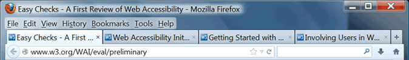
Attēls: Firefox pārlūkprogramma ar pilnu nosaukumu virsrakstjoslā un daļēji redzamiem nosaukumiem cilnēs.
Pareizi izveidoti lapu nosaukumi ir svarīgi, jopalīdz cilvēkiem saprast, kur viņi atrodas, un pārvietoties starp pārlūkprogrammā atvērtām lapām.
Kas ir jādara?/ Ko darīt?
Paskatieties uz lapas nosaukumu (ja izmantojat ekrāna lasītāju- noklausieties to).
Paskatieties uz citu lapu nosaukumiem tīmekļa vietnē.
Kas ir jāpārbauda?/ Ko pārbaudīt?
Pārbaudiet, vai nosaukumsatbilstoši un kodolīgi raksturo lapas saturu.
Pārbaudiet, vai nosaukums ir citādāks nekā citām tīmekļa vietnes lapām un vai tas lapu atšķirno citām tīmekļa lapām.
Padomi
Pastāv vairāki varianti, kā izveidot labus lapu nosaukumus.
Nosaukumu veidošanas labā prakse ir svarīgu un unikālu, identificējošu informāciju iekļaut nosaukuma sākumā.
Piemēram:
Nepiemēroti nosaukumi:
Esiet sveicināti Acme tīmekļa risinājumu mājas lapā
Acme tīmekļa risinājumi I Par mums
Acme tīmekļa risinājumi I Sazinieties ar mums
Acme tīmekļa risinājumi I Vēsture
Piemēroti lapu nosaukumi:
Acme tīmekļa risinājumi mājas lapa
Par Acme tīmekļa risinājumi
Sazināties ar Acme tīmekļa risinājumi
Acme tīmekļa risinājumi vēsture
Lapu nosaukumu pārbaude ar dažādām pārlūkprogrammām
Lapu nosaukumu pārbaude ar dažādām pārlūkprogrammām
Ja jums ir pārlūkprogramma, kas pēc noklusējuma parāda lapas nosaukumu loga virsrakstjoslā, izmantojiet šo pārlūku. Dažas Firefox, Safari, Opera versijas un vecākas Internet Explorer vecākas versijas rāda nosaukumu pēc noklusējuma.
Firefox ar Windows operētājsistēmu. Ja virsrakstjosla nav redzama, jūs varat to pārveidot par redzamu, piespiežot Alt +V, T, M ( vai uzklikšķinot ar labo datorpeles pogu tukšajā laukā pēc cilnes un atlasot Izvēļņu josla( Menu Bar).
Ja jūsu pārlūkprogrammai nav virsrakstjoslas, jūs varat izmēģināt kādu no šiem variantiem:
Novietojiet datorpeles kursoru uz pārlūkprogrammas cilnēm, lai redzētu pilnu vietnes nosaukumu.
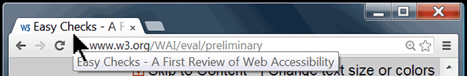
Attēls. Lapas nosaukums uznirstošā logā un datorpeles kursors novietots virs cilnes.
Atveriet dialoga logu Pievienot grāmatzīmi ( Add Bookmark), kurā ir iekļauts nosaukums. Dažās Windows pārlūkprogrammās ir jānospiež Ctrl+D. Dažās Mac pārlūkprogrammās ir jānospiež cmd+D,lai atvērtu dialoga logu Pievienot grāmatzīmi.
Attēla tekstuālas alternatīvas ( alt text)
Tekstuālā alternatīva (text alternatives, alt text) ļauj nodot attēlu, tostarp, fotogrāfiju, ilustrāciju, grafiku nozīmi. Tekstuālās alternatīvas izmanto cilvēki, kuri neredz attēlus. Piemēram, tekstuālās alternatīvas var klausīties cilvēki, kuri ir neredzīgi un izmanto ekrāna lasītājus. Tās var lasīt cilvēki, kuri ir izslēguši attēlus, lai paātrinātu lejuplādi vai saglabātu joslas platumu.
Tekstuālai alternatīvai ir jābūt funkcionālai un jānodrošina līdzvērtīga pieredze, tomēr tai nav noteikti tieši jāapraksta attēlā redzamais. Piemēram, meklēšanas pogai atbilstoša tekstuālā alternatīva būtu “meklēšana”, nevis “lupa”.
Parasti tekstuālās alternatīvas tīmekļa lapās nav redzamas – tās var atrast tīmekļa lapas atzīmēs ( piemēram, šādi: <img src="pointer_to_image.png" alt="šeit ir redzama tekstuālā alternatīva">).
Katra attēla lapas koda atzīmēs ir jābūt iekļautam alt.
Ja attēls sniedz informāciju, kas ir svarīga, lai mijiedarbotos ar tīmekļa lapas saturu vai to saprastu, tam ir nepieciešama tekstuālā alternatīva.
Ja attēls ir tikai dekoratīvs un cilvēkiem nav nepieciešamības par to zināt, tad tam ir jābūt apzīmētam ar nulles alt ( alt=””).
Automatizētie testi var noteikt, vai attēliem ir pievienoti alt. Lai novērtētu tekstuālo alternatīvu piemērotību, ir jāredz attēls un jānovērtēatbilstoši kontekstam.
Kas ir jāpārbauda?
Katram attēlam ir jābūt alt ar atbilstošu tekstuālo alternatīvu.
Padomi
Atbilstošu tekstuālo alternatīvu izveide nav precīza zinātne. Vieniem ir svarīgi, lai vairumam attēlu ir detalizēti apraksti, bet citiem šķiet labāk, ja aprakstu ir mazāk.
Piemērotas tekstuālās alternatīvas.
Tekstuālai alternatīvai jāpiemīt tādai pašai nozīmei, kāda ir attēlam. Ja kāds nevar redzētattēlu, viņam ir jābūt iespējai saņemt svarīgu attēla informāciju ar tekstuālās alternatīvas palīdzību.
Tekstuālā alternatīva ir atkarīga no konteksta. Piemēram, mājdzīvnieku audzētāju kluba tīmekļa vietnē suņa attēla tekstuālajāā alternatīvā var tikt minēta suņa šķirne. Savukārt, ja tāds pats attēls tiek ievietots mājdzīvieku pastaigu parka tīmekļa vietnē tikai, lai to pafdarītu vizuāli pievilcīgāku, tekstuālā alternatīva, iespējams, nav nemaz nepieciešama (un ir jābūt nulles alt).
Viens no veidiem, kas palīdz, domājot par atbilstošu tekstuāloalternatīvu, ir iedomāties, ka jūs palīdzat kādam lasīt un mijiedarboties ar tīmekļa lapu, kuru tas neredz. Ko jūs teiktu par attēlu?
Funkcionāliem attēliem, piemēram, kas ierosinadarbību ( kā poga Iesniegt (submit)) un saistītajiem attēliem ( kā navigācijā), ir jābūt tekstuālai alternatīvai, kas ir funkcionāli ekvivalenta.
Ja attēlā ir iekļauts teksts, piemēram, logotipā, šis teksts ir jāiekļauj arī tekstuālajā alternatīvā.
Ja attēlā ietverta sarežģīta informācija, kā grafikos vai diagrammās, attēlam ir jābūt pievienotai īsai tekstuālai alternatīvai, lai identificētu attēlu, un papildus citā vietā ir jāsniedz detalizētsapraksts, piemēram, datu tabulas veidā.
Kam nav jābūt tekstuālajā alternatīvā?
-Ja satura uztveršanai attēls nav svarīgs,, piemēram, tas ir dekoratīvs vai paredzēts tikai uzmanībaspiesaistīšanai, šim attēlam ir jāpievieno nulles alt ( alt=””). Lai noteiktu, vai attēlam nepieciešams nulles alt, ir jāpadomā: ja attēls tiktu dzēsts, vai lapas lietotājs arvien saņemtu visu nepieciešamo informāciju?
Tekstuālās alternatīvās nav jāiekļauj tādi vārdi kā “poga”, “saite”, “attēls” ( ekrāna lasītāji šādu informāciju nodrošina automātiski).
Ja attēla saturs ir pietiekami aprakstīts tekstā ( piemēram, vienkārša diagramma ilustrē to, kas rakstīts tīmekļa lapas tekstā), tad var pievienot tikai īsu tekstuālo alternatīvu: “Diagramma attēlo darba plūsmu, kas ir aprakstīta iepriekš.”
Alt atribūts HTML ( nevis “alt tag” )
HTML ( tīmekļa lapu kods, ko sauc par iezīmēšanas valodu) kontekstā alt ir attēlu un citu elementu atribūts. Tātad “alt tag” ir tehniski neprecīzs termins, un būtu jālieto “alt atribūts” vai “alt teksts”. ) lapas koda atzīmēs šād tas izskatīsies šādi: <img alt="WAI logo" src="/wai/logo.png">
Virsraksti
Tīmekļa lapām bieži ir informācijas sadaļas, kas ir atdalītas ar vizuāliem virsrakstiem, piemēram, virsraksta teksts ir lielāks un treknrakstā ( kā teksts “virsraksti”, kuru jūs redzat pirms šī teikuma). Lai šīs priekšrocības varēt izmantot visi, virsrakstiem ir jābūt atzīmētiem lapas kodā. Tas nodrošina cilvēkiem iespēju navigācijai izmantot virsrakstus, arī tiem, kuri nevar lietot datorpeli un izmanto tikai tastatūru, kā arī cilvēkiem, kuri izmanto ekrāna lasītājus.
Virsrakstu līmeņiem ir jābūt izkārtotiem jēgpilnā hierarhijā, piemēram:
Virsraksta 1.līmenis ,<h1>
Virsraksta 2.līmenis ,<h2>
Virsraksta 3.līmenis ,<h3>
Virsraksta 3.līmenis ,<h3>
Virsraksta 2.līmenis ,<h2>
Virsraksta 3.līmenis ,<h3>
Virsraksta 4.līmenis ,<h4>
Virsraksta 4.līmenis ,<h4>
Virsraksta 2.līmenis ,<h2>
Ko pārbaudīt?
Lapai ir virsraksts? Gandrīz visās lapās ir jābūt vismaz vienam virsrakstam.
Viss teksts, kas izskatās pēc virsrakstiem, ir atzīmēts lapas kodā kā virsraksts.
Vai visi teksti, kas lapas kodā ir atzīmēti kā virsraksti, patiešām lapā tiek izmantoti kā sadaļu virsraksti?
Virsrakstu hierarhija ir jēgpilna. Ideālā gadījumā lapa sākas ar h1 (parasti tas ir līdzīgs lapas nosaukumam) un netiek izlaisti virsrakstu līmeņi. Tomēr tas ir tikai ieteikums, nevis obligāta prasība.
Virsrakstu pārbaude
Turpmākās pārbaudes sniedz instrukcijas ar dažādām pārlūkprogrammām, kā iegūt lapas virsrakstu vai virsrakstu atzīmju (markup) strukturējumu (outline).
Virsrakstu strukturējums - lapas kodā atzīmēta virsrakstu struktūra, piemēram:
Figure: Outline of headings.
Virsrakstu atzīmes (markup) lapā: lapas skats, kurā redzamas virsrakstu atzīmes. Piemērs.
Rīkjoslā atlasiet Informācija (Information), tad Skatīt dokumenta strukturējumu (View Document Outline), vai uz tastatūras spiediet: Alt+T,W (uz Tīmekļa attīstītāja paplašinājumu (Web Devoloper Extention), I, M. Atveras jauna lapa ar strukturējumu.
Nevizuālā pārbaude.
Vai ir uzskaitīti visi virsraksti? Ja virsraksti nav atzīmēti lapas kodā, tiks paziņots, ka ir „O virsrakstu”.
Vai strukturējums sākas ar [H1] un seko jēgpilna (loģiska) hierarhija? Tas nav obligāti, tomēr ļoti ieteicams.
Vizuālā pārbaude. Salīdziniet dokumenta strukturējumu ( Document Outline) ar lapas vizuālo atainojumu.
Vai viss,kas izskatās pēc virsraksta lapā, ir iekļauts dokumenta strukturējumā?
Vai dokumenta strukturējumā ir kas tāds, kas patiesībā nav virsraksts?
Virsrakstu atzīmes (markap) lapā.
Virsrakstu pārbaude ar IEWAT
Virsrakstu strukturējums.
Atveriet tīmekļa lapu, kurai veicat pārbaudi.
Rīkjoslā atlasiet Strukturējums (Outline), tad Virsrakstu struktūra ( Heading structure) vai uz tastatūras spiediet Ctrl/cmd+Alt+6, tad lejupvērsto bultu uz „virsrakstu struktūra” ( Heading structure). Atvērsies jauna lapa ar strukturējumu.
Nevizuālā pārbaude.
Vai ir uzskaitīti visi virsraksti? Ja lapas kodā nav atzīmēts neviens virsraksts, tiks paziņots, ka „O virsrakstu”.
Vai strukturējams sākas ar [H1] un seko jēgpilna (loģiska) hierarhija? Tas nav obligāti, tomēr ļoti ieteicams.
Vai viss,kas izskatās pēc virsraksta lapā, ir iekļauts dokumenta strukturējumā?
Vai dokumenta strukturējumā ir kaut kas tāds, kas patiesībā nav virsraksts?
Virsrakstu atzīmes ( markup) lapā.
Atveriet tīmekļa lapu, kurai veicat pārbaudi.
Rīkjoslā atlasiet Struktūra ( Structure), tad Virsraksti ( Headings) vai uz tastatūras spiediet Ctrl/cmd+Alt+6, tad lejupvērsto bultu uz „Virsraksti” (Headings). Virsrakstiem apkārt būs <h1>, <h1> u.c. ikonas ar violetiem burtiem uz gaiša fona.
Pirms visiem funkcionālajiem virsrakstiem ir jābūt virsraksta ikonai.
Tam, kas nav funkcionāls virsraksts, nebūtu jābūt priekšā novietotai virsraksta ikonai.
Virsrakstu pārbaude ikvienai pārlūkpograma
Virsrakstu strukturējums.
Jebkurā no pārlūkprogrammām atveriet the W3C HTML pārbaudes rīku ( The W3C Markup Validation Service).
Adreses laukā ierakstiet URI ( piemēram, www.w3.org).
Uzklikšķiniet uz saites „vairāk iespēju” ( more options).
Atlasiet strukturējuma izvēles rūtiņu.
Uzklikšķiniet uz pogas “pārbaudīt”( check). Parādīsies lapa ar rezultātu ( ar nosaukumu, kas sāksies ar [Valid] vai [Invalid] ( derīgs vai nederīgs).
Rezultātu lapas augšējā daļā, “Jump to: ”(pāriet) līnijas beigās, uzklikšķiniet uz strukturējuma teksta saites ( Outline text).
Nevizuāla pārbaude.
Vai tur kaut kas ir redzams? Ja nav teksta starp “zemāk ir strukturējums šim dokumentam, automatizēti izveidots no virsraksta atzīmēm (<h1> līdz <h6> („Below is an outline for this document, automatically generated from the heading tags (<h1>through <h6>”) un “ja tas neizskatās pēc atbilstoša strukturējuma (If this does not look like a real outline...), tas nozīmē, ka lapā nav virsrakstu, kas būtu atzīmēti lapas kodā.
Vai strukturējums sākas ar H1} un tam ir jēgpilna ( loģiska) hierarhija? Tas nav obligāti, tomēr ļoti ieteicams.
Vai viss,kas izskatās pēc virsraksta lapā, ir iekļauts dokumenta strukturējumā?
Vai dokumenta strukturējumā ir kaut kas tāds, kas patiesībā nav virsraksts?
Virsrakstu atzīmes ( markap) lapā:
Atveriet WAVE tīmekļa piekļūstamības novērtēšanas rīku.
Ierakstiet tīmekļa vietnes adresi teksta laukā pēc Ierakstiet tīmekļa vietnes URL, kuru vēlaties novērtēt: ( Enter the URL of the web site you want to evaluate:)
Uzklikšķiniet uz WAVE šo lapu ( WAWE this page) pogas. Jūsu tīmekļa lapa parādīsies pārlūkprogrammā ar daudzām mazāk ikonām uz tās.
Pirms visiem funkcionālajiem virsrakstiem ir jābūt virsraksta ikonai. Tam, kas nav funkcionāls virsraksts, nebūtu jābūt priekšā novietotai virsraksta ikonai.
Pārbaudes veikšana ar PPD
Virsraksta strukturējums.
Sekojiet instrukcijām zem “Virsrakstu strukturējums” augstāk tekstā un izmantojiet piekļūstamo ziņu lapu: www.w3.org/WAI/demos/bad/after/news. Pievērsiet uzmanību, ka šajā gadījumā ir redzams precīzs hierarhisks strukturējums.
Pēc tam izmantojiet nepiekļūstamo ziņu lapu: www.w3.org/WAI/demos/bad/before/news. (HTML validatorā , pārbaudes pogā Pārbaudīt (Check) var būt rakstīts Atkārtoti validēt ”(Revalidate). Pievērsiet uzmanību, ka šeit ir tikai viens virsraksts.
Virsrakstu atzīmes ( markap) lapā.
Sāciet ar vizuālu nepiekļūstamās ziņu lapas aplūkošanu: www.w3.org/WAI/demos/bad/before/news. Kas tajā izskatās pēc virsrakstiem? (Citylights News, Heat wave linked to temperatures, Man Gets Nine Months in Violin Case, ...)
Pēc tam apskatieties, kā tam būtu jāizskatās. Sekojiet vienai no augstāk redzamajām instrukcijām “Virsrakstu atzīmes lapā”, ar piekļūstamo ziņu lapu: www.w3.org/WAI/demos/bad/after/home. Pievērsiet uzmanību, ka virsrakstiem blakus ir ikonas.
Pēc tam paskatieties, kā izsatās, kad virsraksti nav atzīmēti lapas kodā. Izmantojiet nepiekļūstamo ziņu lapu: www.w3.org/WAI/demos/bad/before/home. Pievērsiet uzmanību, ka šeit ir teksts, kas vizuāli izskatās pēc virsraksta, taču tam blakus nav virsraksta ikonas. (Izmantojot WAVE, šeit ir dzeltenas ikonas ar “h?”, jo tas pieņem tos par virsrakstiem.).)
Papildu informācija par virsrakstiem:
Informācija un attiecības – Skaidrojums par sekmīguma kritēriju 1.3.1 WCAG 2.1 izprašanai(A līmenis)
Daļa cilvēku nevar lasīt tekstu, ja nav pietiekama kontrasta starp tekstu un fonu, piemēram, ja lapā ir gaiši pelēks teksts uz gaiša fona.
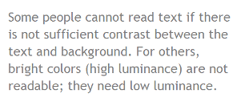
Attēls. Pelēks teksts uz gaiša fona.
Liels kontrasts (piemēram, tumšs teksts uz gaiša fona vai spilgts teksts uz tumša fona) ir nepieciešams cilvēkiem ar redzes traucējumiem, tostarp daudziem vecāka gadagājuma cilvēkiem, kuriem ar laiku mazinās kontrasta jutīgums.
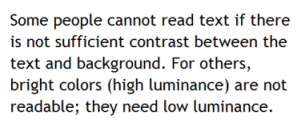
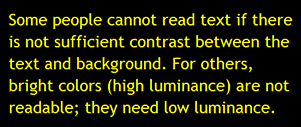
Attēls. Tumšs teksts uz gaiša fona un dzeltens teksts uz melna fona.
Kamēr vieniem ir nepieciešams liels kontrasts starp tekstu un fonu, citiem cilvēkiem, piemēram, ar lasīšanas traucējumiem, tostarp disleksiju, spilgto krāsu ( vairāk spožuma) dēļ teksts var kļūt nelasāms. Viņiem ir nepieciešams mazāk spožuma.
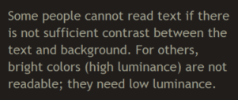
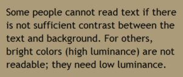
Attēls. Brūns teksts uz tumša fona un tumšs teksts uz vidēji tumši brūna fona.
Tīmekļa pārlūkprogrammām ir jānodrošina iespēja lietotājiem mainīt teksta un fona krāsu, un tīmekļa lapām ir jādarbojas pēc krāsu nomaiņas.
(Šo piekļūstamības prasību dažkārt dēvē par pietiekamu “krāsu kontrastu”, tomēr tas nav pareizi - tehniski tas ir “spožuma kontrasts”. Šajā lapā “kontrasta koeficients” tiek izmantots kā saīsinājums no “spožuma kontrasta koeficients”. Šis ir tikai ieskats tēmā par kontrastu. Šajā jomā ir daudz zināšanu, kuras iespējams apgūt papildus.
Kas ir jāpārbauda?
Tīmekļa lapās pēc noklusējuma ir jābūt minimālam kontrastam - normāla izmēra tekstā kontrasta koeficientam jābūt vismaz 4,5: 1.
Ir trīs veidi, kā pārbaudīt kontrastu, un katram no tiem ir savas priekšrocības un trūkumi.
Tabula ar kontrasta koeficientiem. Rīkā ir redzama tabula ar visiem tīmekļa lapā iespējamiem kontrasta koeficientiem. Daži no rīkiem piedāvā papildu iespēju – klikšķinot tabulā, tie parāda, kurā vietā tīmekļa lapā šī krāsu kombinācija atrodas.
Priekšrocības. Vispusīgums ( plaši izmantojams rīks?)
Trūkumi. Rīks var būt neprecīzs – var parādīt krāsu kombinācijas, kuras nav redzamajā lapā.
Pipete (Eye -dropper) krāsu atlasīšanai. Rīks ļauj atlasīt teksta un fona krāsu, pēc tam parāda kontrasta koeficientu.
Priekšrocības. Precizitāte
Trūkumi. Vienlaicīgi var veikt pārbaudi tikai vienai vienībai. Lai to izmantotu, ir jāredz ekrāns un jāizmanto datorpele.
Krāsu izslēgšana. Rīks parāda lapu pelēkos toņos.
Priekšrocības. Rīks sniedz tiešu pieredzi.
Trūkumi. Neprecīza metode, jo nenodrošina kontrasta koeficienta vērtību.
Kontrasta pārbaudes.
Zemāk atradīsiet instrukciju, kā pārbaudīt kontrastu ar IE WAT. Saraksts ar citiem kontrastu analīzes rīkiem ir atrodams Saistīto resursu sadaļā lapā “Skaidrojums par sekmīguma kritēriju 1.4.3.”
Kontrastu pārbaude ar IE WAT.
Kā veikt trīs augstāk minētās kontrasta pārbaudes?
Tabula ar kontrasta koeficientiem.
Rīkjoslā atlasiet: Krāsa (Color)> Juicy Studio spožuma analizators (Juicy Studio Luminosity Analyser). Vai uz tastatūras spiediet Ctrl/cmd + Alt +5, tad ar lejuupvērsto bultiņu uz Juicy Studio spožuma analizators.
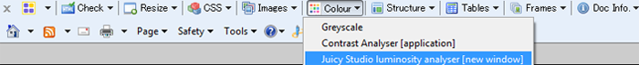
Atvērsies jauns logs Krāsu kontrasta analizators (Colour Contrast Analyser) ar rezultātu tabulu. Pēdējā kolonnā atradīsiet Spožuma kontrasta koeficientu (Luminosity Contrast Ratio).
Pipete ( Eye-dropper) krāsu atlasīšanai.
Rīkjoslā atlasiet: Krāsa (Color) > Kontrasta analizators [lietojumprogramma](Contrast Analyser). Vai nospiediet uz tastatūras: Ctrl + Alt +5, un pēc tam ar lejupvērsto bultiņu uz Kontrasta analizators [application]”. Atvērsies lietojumprogrammas logs Krāsu kontrasta analizators.
Izmantojot pirmo pipetes ikonu priekšplāna krāsu izvēlē, izvēlieties priekšplāna krāsu ( parasti no tekta), kuru vēlaties analizēt.
Izmantojot otro pipetes ikonu no fona krāsu sadaļas, izvēlieties atbilstošu fona krāsu.
Krāsu kontrasta analizatora loga apakšā tiks parādīts rezultāts- spožuma kontrasta koeficients ( piemēram, 7.5:1), Ir izdevies (Pass) vai Nav izdevies ( Fail) un vizuāls krāsu piemērs.
Krāsu izslēgšana.
Rīkjoslā atlasiet Krāsa ( color) > Pelēko toņu skala (Grey Scale). Vai uz klaviatūras nospiediet: Ctrl + Alt +5, pēc tam ar lejupvērsto bultiņu uz Pelēko toņu skala.
Pārbaudiet, vai pēc krāsu konvertēšanas uz pelēko toņu skalu visa informācija arvien atrodama un labi redzama.
Kontrasta pārbaude ar citām pārlūkprogrammām.
Nav vienkārša veida, kā pārbaudīt kontrastu ar WebDev rīkjoslu. Ir iespēja izmantot Juicy Studio piekļūstamības rīka Juicy Studio Accessibility Toolbar pievienojumprogrammu, kas nodrošina tādu pašu informāciju kā IE WAT un strādā ar Firefox.
Daļa tīmekļa lietotāju palielina teksta izmēru, lai varētu to izlasīt. Citi lietotāji maina arī tādus teksta attēlojuma aspektus kā fontu, atstarpes starp rindiņām utt.
Vairums pārlūkprogrammu ļauj lietotājiem mainīt teksta lielumu šādos veidos:
ar teksta lieluma iestatījumu palīdzību (parasti, izmantojot Opcijas vai Preferences);
ar teksta tālummaiņu (text- only zoom);
ar lapas tālummaiņu (page zoom), kas pietuvina arī attēlus, pogas u.c..
Ja lapa nav pareizi izstrādāta, mainot teksta izmērus, tā var kļūt nelietojama, it īpaši, ja tiek veikta teksta tālummaiņa vai teksta iestatījumu izmaiņas. Var pārklāties teksta kolonnas un sekcijas, pazust rindiņu atstarpes, rindiņas var kļūt pārāk garas vai var pazust teksts.
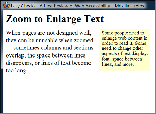
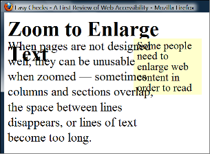
Attēls. Divi ekrāna tvērumi, kas parāda, kā, palielinot teksta lielumu, virsraksts pārklājas ar galveno tekstu, galvenais teksts pārklājas ar sānjoslas tekstu un apakšpusē tiek nogriezts sānjoslas teksts.
Palielinot teksta izmēru, dažreiz kāda teikuma daļa var kļūt neredzama. Lai izlasītu visu teikumu, lietotājiem ir horizontāli jāritina ( kā parādīts trešajā piemērā). Vairums cilvēku nevar veiksmīgi lasīt tekstu, kuru ir atseviÞsku veselības traucējumu gadījumā tas ir pilnīgi neiespējami.
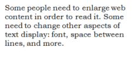
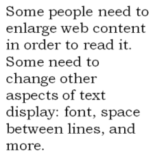
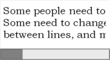
Attēls. Pirmais attēls parāda normāla izmēra tekstu. Otrajā attēlā ir lielāks teksts, kas iekļaujas platumā. Trešajā attēlā, daži no garākajiem tekstiem vairs nav redzami bez horizontālās ritināšanas.
Ko darīt?
Palieliniet teksta izmēru.
Kas ir jāpārbauda?
Pārliecinieties, vai viss lapas teksts kļūst lielāks. Bieži teksts ir nevis teksta, bet gan attēla formātā. Palielinot teksta izmēru, teksts attēlā nepalielinās.
Vai teksts nepazūd, vai netiek nogriezta kāda tā daļa?
Vai, mainot izmēru, teksts, attēli un cits saturs nepārklājas?
Vai visas pogas, formu lauki un citas vadīklas ir redzamas un izmantojamas?
Vai lietotājs var izlasīt teikumus un teksta blokus, neizmantojot horizontālo ritināšanu? Atbilstoši labajai praksei, palielinot teksta lielumu, ir redzams viss teikums. Ir pieļaujams ritināt horizontāli, ja ir nepieciešams nokļūt citās lapas daļās. (Valodās, kuras tiek lasītas no augšas uz leju, nomainiet “horizontālo ritināšanu” uz “vertikālo ritināšanu”).
Teksta izmēra maiņas pārbaude
Zemāk redzamās instrukcijas paredzētas tikai paša teksta palielināšanai. Jūs varat mainīt arī teksta uzstādījumus, piemēram, ar Rīki ( Tools)> Opcijas vai Preferences. Lai saglabātu vienkāršību, instrukcijas uzstādījumu maiņai šeit nav iekļautas. Tāpat nav iekļautas instrukcijas lapu tālummaiņai, jo tas parasti neatklāj iepriekš minētās piekļūstamības problēmas.
Ja lietojat Chrome, lai iegūtu tikai teksta tālummaiņu, ir nepieciešams paplašinājums. Firefox, Safari un IE instrukcijas ir aprakstītas zemāk.
Teksta tālummaiņas pārbaude Firefox pārlūkā.
Iestatiet “tikai teksta” tālummaiņu.
Izvēlnes joslā (menubar) atlasiet Skats ( View) >Tālummaiņa (Zoom) > Tikai teksta tālummaiņa (Zoom Text Only). Vai spiediet uz tastatūras: Alt + V, Z, T.
Palieliniet tālummaiņu līdz 200%
Lai palielinātu tālummaiņu ar tastatūru:
Windows operētājsistēmā spiediet Ctrl + [+] (turiet nospiestu kontroles taustiņu un vienlaikus nospiediet + taustiņu);
Mac operētājsistēmā spiediet komanda + [+] (vienlaikus turiet nospiestu komandtaustiņu un taustiņu +).
Parasti, nospiežot taustiņu 4-6 reizes, tiek iegūts 200% palielinājums.
Lai pārbaudītu vai iestatītu tālummaiņas procentus izvēlnē:
noklikšķiniet uz izvēlnes pogas;
izvēlnē noklikšķiniet uz pogas +, lai palielinātu. Skaitlis pirms pogas + ir pašreizējās tālummaiņas procentuālā vērtība.
Lai apstiprinātu, ka jums ir iestatīta tikai teksta tālummaiņa, pārliecinieties, ka lielāks kļūst tikai teksts, nevis attēli.
Teksta tālummaiņas pārbaude Safari pārlūkā.
Palieliniet tālummaiņu līdz 200%. No izvēlnes joslas izvēlieties Skatīt izvēlni( View Menu), turiet nospiestu opciju taustiņu un atlasiet Palielināt tekstu (Make Text Bigger). Vai Mac operētājsistēmā uz tastatūras spiediet: opcija (option) + komanda (command) + [+] (vienlaikus turiet nospiestu opcijas taustiņu, komandtaustiņu un + taustiņu).
Parasti, nospiežot taustiņu 4-6 reizes, tiek iegūts 200% palielinājums.
Pārliecinieties, ka lielāks kļūst tikai teksts, nevis attēli.
Teksta tālummaiņas pārbaude IE pārlūkā.
Izvēlnes joslā atlasiet Skats (View) > Teksta lielums (Text Size)> Vislielākais (Largest).
Vai spiediet uz tastatūras: Alt + V, X, G.
Ja jūs neredzat izvēlnes joslu, to var parādīt sekojošos veidos:
Meklēšanas lodziņā ierakstiet Internet Explorer un pēc tam rezultātu sarakstā noklikšķiniet uz Internet Explorer. Lai izvēlnes josla būtu redzama tikai uz laiku, nospiediet taustiņu Alt.
Lai izvēlnes josla tiktu rādīta pastāvīgi: noklikšķiniet uz pogas Rīki ( Tools), atlasiet Rīkjosla (Toolbar) un pēc tam noklikšķiniet Izvēlnes josla (Menu Bar).
Pārlūkprogrammas augšdaļā, tukšajā vietā, kur parasti atrodas izvēlnes josla, noklikšķiniet ar peles labo pogu, un tur parādīsies uznirstošā izvēlne.
Atlasiet Izvēlnes josla (Menu bar).
Papildu informācija par teksta izmēra maiņu:
Mainīt teksta izmērus. Skaidrojums par sekmīguma kritēriju Nr. 1.4.4 WCAG 2.1. (AA līmenis);
Teksta attēli. Skaidrojums par sekmīguma kritēriju 1.4.5 WCAG 2.1. (AA līmenis)
Tastatūras piekļuve un vizuālais fokuss
Liela daļa cilvēkunevar izmantot datorpeli un var paļauties tikai uz tastatūru, lai mijiedarbotos ar tīmekļa vietni. Neredzīgi cilvēki un redzīgi cilvēki ar kustību traucējumiem paļaujas uz tastatūru vai palīgtehnoloģijām un stratēgijām, kas balstās uz tastatūras komandām, piemēram, balss ievadi.
Piekļūstamas tīmekļa vietnes dod iespēju cilvēkiem piekļūt visam saturam un funkcionalitātei - saitēm, formām, mediju vadīklām -izmantojot klaviatūru.
Tastatūras fokusam ir jābūt redzamam, un tam ir jāpārvietojas loģiskā secībai cauri lapas elementiem. Redzamais tastatūras fokuss var būt kā rāmis vai izgaismojums (kā parādīts zemāk), kas pārvietojas pa lapu, kad tiek nospiests tabulēšanas taustiņš ( Tab).
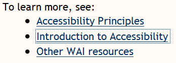
Attēls: Punktota līnija uz vidējās saites.
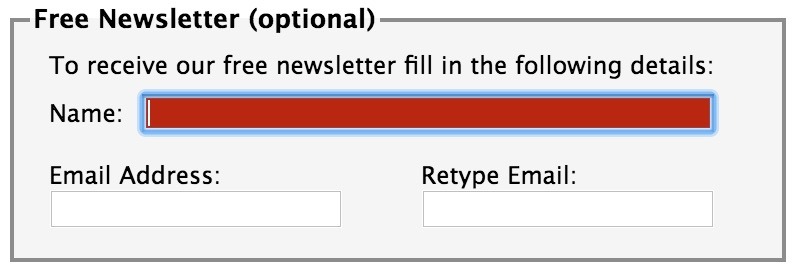
Attēls: Lauks Vārds (Name) iezīmēts sarkanā krāsā.
Ko darīt?
Mac pārlūkprogrammā iespējojiet tastatūras navigāciju visām vadīklām.
Jaunākās pārlūkprogrammās: Atlasīt sistēmas preferences (Select System Preferences) > Tastatūra (Keyboard )> Saīsnes(Shortcut). Atlasiet radiopogu Visas vadīklas (All controls).
Vecākās pārlūkprogrammās: Atlasīt sistēmas preferences(Select System Preferences) > Tastatūra (Keyboard )> Tastatūras saīsnes (Keyboard Shortcut). Sadaļā Pilnīga tastatūras piekļuve (Full Keyboard Access" section) noklikšķiniet Visas vadīklas ( All Controls).
Ieklikšķiniet adreses joslā, pēc tam nolieciet datorpeli malā un neizmantojiet to.
Nospiediet taustiņu Tab, lai pārvietotos pa lapas elementiem. Lai pārvietotos pretēji, nospiediet vienlaicīgi taustiņus Shift un Tab.
Lai pārvietotos pa tādiem elementiem kā nolaižamie saraksti un izvēlņu joslas, nospiediet bulttaustiņus.
Lai nolaižamajā sarakstā atlasītu noteiktu vienumu:
ar Tab taustiņu pārvietojieties uz sarakstlodziņu;
izmantojiet bulttaustiņu, lai pārvietotu fokusu uz vajadzīgo vienumu,
kad vienums ir fokusā, nospiediet taustiņu Ievadīt (Enter) vai Atstarpe (Space), lai atlasītu vienumu.
Ko pārbaudīt?
Pārbaudiet, vai ar tabulēšanas taustiņu var nokļūt pie visiem elementiem, tostarp, saitēm, formu laukiem, pogām, multivides atskaņotāju vadīklām. (Bieži sastopama problēma ir tā, ka nevar pārvietoties ar austiņu tab uz multivides atskaņotāja vadīklām.)
Pārliecinieties, ka ar tabulāro taustiņu varat pārvietoties prom no elementiem, kuros esat nokļuvuši. (Bieži sastopama problēma - tastatūras fokuss tiek notverts multivides atskaņotāja vadīklās un nav iespējams no tām izkļūt. To sauc par “tastatūras slazdu”).
Pārbaudiet, vai tabulēšanas secība atbilst loģiskajai lasīšanas secībai (no augšas uz leju un no kreisās uz labo pusi).
Pārbaudiet, vai fokuss ir skaidri redzams, kad ar tab taustiņu pārvietojaties caur lapas elementiem, un vai varat noteikt, kurš elements ir fokusā. Piemēram, vai saitēm apkārt ir pelēka kontūra, vai tās ir iezīmētas.
Vai lapā visu var izdarīt, izmantojot tikai tastatūru? Tas ir, vai bez datorpeles varat aktivizēt darbību, izvēles, vizuālās izmaiņas un citu funkcionalitāti. (Izplatīta problēma ir tā, ka daļa funkcionalitātes ir pieejama tikai, izmantojot peles rādītāju, un nav pieejama ar tastatūras fokusu).
Pārbaudiet, vai pēc tam, kad ar Tab taustiņu esat nonākuši nolaižamajā sarakstā, jūs varat ar bulttaustiņu pārvietoties pa visiem saraksta elementiem, neizraisot darbību. Nolaižamajos lauciņos, kas tiek izmantoti navigācijai, bieži var novērot, ka , līdzko tiek nospiesta bultiņa uz leju, tiek atzīmēts pirmais vienums sarakstā un atveras jauna lapa. Rezultātā citas vienības atzīmēt nav iespējams.
Ja lapā attēli ir kā saites, to vizuālajam fokusam ir jābūt skaidram un to jāspējaktivizēt, izmantojot tastatūru (parasti nospiežot taustiņu Ievadīt(Enter).
Vizuālā fokusa darbība PPD
Atveriet piekļūstamā parauga aptaujas lapu: www.w3.org/WAI/demos/bad/after/survey
Spiediet Tab taustiņu, lai pārvietotos pa lapu.
Pievērsiet uzmanību:
vairumam elementu parādās sarkans fons, kad uz tiem ir fokuss;
pārējām aptaujas lapām ir punktēts rāmis un bultiņas;
radiopogām ir punktēts rāmis.
Papildu informācija par tastatūras piekļuvi:
Formas, lauku nosaukumi un kļūdas paziņojumi
Piezīme. Šī sadaļa ir sarežģītāka nekā pārējās. Ja tā ir pārāk sarežģīta, apsveriet iespēju to pagaidām izlaist un veikt atlikušās pārbaudes.
Formu piekļūstamībai ir svarīgi lauku nosaukumi, iespēja aizpildīt tās tikai ar tastatūras palīdzību, skaidras un saprotamas instrukcijas un efektīva kļūdu novēršana.
Formas laukiem un citām formas vadīklām( control) parasti ir redzams lauka nosaukums. Piemēram, “E-pasta adrese:” , ar kuru tiek iezīmēts (label) lauks teksta ievadīšanai.
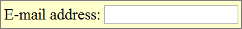
Ja lauku nosaukumi ir pareizi atzīmēti lapas kodā, cilvēki var ar tiem mijiedarboties, izmantojot tikai tastatūru, balss ievadi un ekrāna lasītājus. Arī pats lauka nosaukums kļūst tāds, uz kura var klikšķināt, palielinot mijiedarbības laukumu un atvieglojot mazo radiopogu vai izvēles rūtiņu atlasīšanu.
Ko darīt?
Atrodiet lapā visas formas. Formā var būt viens teksta ievades lauks, piemēram, Meklēt (Search) , vai arī tā var būt sarežģītāka forma ar teksta laukiem, radiopogām, izvēles rūtiņām, nolaižamajiem sarakstiem un pogām.
Kas ir jāpārbauda?
Piekļuve tikai no tastatūras.
Izmantojot augstāk atrodamo tastatūras piekļuves pārbaudi, pārliecinieties, ka visas formas vadīklas var lietot ar klaviatūru vien. Tostarp, vai varat tikt pie visiem vienumiem nolaižamajos sarakstos.
Lauku nosaukumi
Pārbaudiet, vai katrai formas vadīklai ir ar to saistīts nosaukums (label), izmantojot label, for un id, kā tas ir redzams zemāk sniegtajā piemērā. Tā ir labā prakse vairumā gadījumu, taču tā nav obligāta prasība, jo formas lauku nosaukumi var būt sasaistīti arī citādākā veidā.
Pārbaudiet, vai nosaukumi ir novietoti pareizi. Valodās, kurās tiek lasīts no kreisās uz labo pusi, nosaukumiem jābūt:
Pa kreisi no teksta ievadlaukiem un nolaižamajiem sarakstiem;
Pa labi no radiopogām un izvēles rūtiņām.
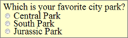
Obligātie lauki un citi norādījumi
Pārbaudiet, vai ir skaidri norādīti visi obligātie lauki.
Pārbaudiet, lai norāde uz obligātu lauku neizpaužas tikai kā atšķirīga krāsa vien. Piemēram, ja par obligātu lauku liecina vien sarkanā krāsa nosaukumā, to nespēs ieraudzīt cilvēki, kas neredz krāsu atšķirības.
Pārbaudiet, vai indikators ( piemēram, zvaigznīte (*) ir iekļauts lauka nosaukumā (label), kas atzīmēts lapas kodā ( teksta ievades lauku un nolaižamo sarakstu gadījumā), vai arī apzīmējumā (legend) ( radio pogām un izvēles rūtiņām), kā tas ir parādīts lauka nosaukumu pārbaudē zemāk.
Pārbaudiet, vai visi norādījumi formas aizpildīšanai ir pieejami pirms dati tiek ievadīti. Piemēram:
parasti vispārējās instrukcijas ir formas vai atbilstošās sadaļas augšpusē;
nosaukumā ir jābūt norādītam nepieciešamajam informācijas ievadīšanas formātam, piemēram, datumam (datums.mēnesis.gads formātā 00.00.0000), kā tas parādīts “Formu nosaukumu pārbaude”.
Kļūdu novēršana
Dažām vienkāršām formām, piemēram, vienam meklēšanas laukam, var nebūt kļūdu. Ja uzskatāt, ka lapā, kuru pārbaudāt, var būt kļūdu paziņojumi, mēģiniet atstāt nepieciešamos laukus tukšus vai ievadīt nepareizi formatētu informāciju (piemēram, tālruņa numuru vai e-pasta adresi), pēc tam mēģiniet formu iesniegt.
Ja parādās, ka ir notikusi kļūda, veiciet šādus soļus:
Pārbaudiet, vai ir sniegti skaidri un konkrēti norādījumi, lai palīdzētu lietotājiem izprast un novērst kļūdu. Ja kļūda ir saistīta ar ievades formātu, piemēram, datumu, laiku vai adresi, pārbaudiet, vai ir precīzi izskaidrots pareizais formāts.
Pārbaudiet, vai kļūdas ir viegli atrodamas. abākais risinājums parasti ir kļūdu ziņojumus parādīt pirms, nevis pēc formas.
Pārbaudiet, vai lauki, kuros nebija kļūdu, arvien ir aizpildīti ar jūsu ievadītajiem datiem. (Tas atbilst labajai praksei, tomēr tā nav obligāta prasība.) Cilvēkiem nevajadzētu atkārtoti ievadīt visu informāciju formā, izņemot dažus sensitīvus datus, piemēram, kredītkaršu numurus.
Formu nosaukumu pārbaude
Piezīme. Šie norādījumi palīdz pārbaudīt, vai lauka nosaukumi ir atzīmēti lapas kodā ar 'label', 'for' un 'id'. Tā nepārbauda, ja formas lauki un to nosaukumi ir sasaistīti citādi, piemēram, ar ARIA risinājumu. Tāpēc, pat ja forma neiztur šīs pārbaudes, tā joprojām var atbilst WCAG 2.0.
Saturs, kas kustas, zibsnī vai mirgo
Saturā, kas kustas, zibsnī vai mirgo, ietilpst karuseļi (karuseļa piemērs), reklāmas, videoklipi, vērtības, kas atjaunojas automātiski (a_uto-updating stock tickers_ ), ritināmas ziņu plūsmas (scrolling news feeds) u.c. Lietotājiem ir jābūt iespējai kontrolēt kustīgo saturu,īpaši cilvēkiem aruzmanības deficīta vai vizuālās apstrādes traucējumiem.
Iespējamās piekļūstamības problēmassaistībā ar kustīgu, zibsnījošu un mirgojošu saturu:
Kustīgas informācijas izpratne. Daļa cilvēku lasa un apstrādā informāciju lēnāk nekā citi. Saturs var pazust, pirms cilvēks pagūst to izlasīt. Dažiem cilvēkiem ir grūti izsekot kustīgiem objektiem.
Kustīgs saturs novērš uzmanību. Cilvēkiem var būt gūtības fokusēties un lasīt saturu, kamēr citā lapas daļā notiek kustība, kas piesaista uzmanību.
Cilvēkiem, kuriem ir fotosensitīva epilepsija, zibsnījošs vai mirgojošs saturs var izraisīt krampjus, it īpaši, ja saturs:
zibsnī ir vairāk nekā 3 reizes sekundē;
aizņem lielu ekrāna daļu;
ir ļoti spilgts.
Kas ir jāpārbauda?
Pārbaudiet, vai lapā ir informācija, kas kustas, mirgo vai ritinās (scrolling), sākas automātiski un ilgst vairāk nekā piecas sekundes. Ja tāda informācija ir, pārbaudiet, vai lietotājs var to apturēt, apstādināt vai paslēpt.
Pārbaudiet, vai lapā ir informācija, kas automātiski atjaunojas (piemēram, akciju cena). Ja šāda informācija ir, pārbaudiet, vai lietotājs var to apturēt, apstādināt vai paslēpt, vai lietotājs var kontrolēt informācijas atjaunošānās biežumu.
Pārbaudiet, vai saturs nezibsnī vai nemirgo vairāk nekā trīs reizes sekundē. Ja tas tā notiek, ir nepieciešama papildu novērtēšana, kuru atradīsiet lapā “Trīs zibšņi sekundē vai mazāk nekā robežvērtība”.
Papildu informācija par saturu, kas kustas, zibsnī vai mirgo:
Nedzirdīgiem un vājdzirdīgiem cilvēkiem nav piekļūstama informācija aplādē ( podcasts) vai citos audio failos, ja vien netiek piedāvāti alternatīvi formāti, kā titri un teksta noraksti (transcripts). Savukārt video vizuālā informācija nav piekļūstama cilvēkiem ar vāju redzi vai neredzīgiem, ja vien netiek piedāvāts alternatīvs formās, kā audio vai teksts. (Tekstu var izlasīt ar ekrāna lasītāja vai Braila displeja palīdzību, bet cilvēki ar vāju redzi to var palielināt vai mainīt tam formatējumu).
Atcerieties, ka šī sākotnējā pārbaude nav visaptveroša vai galīga.
Kas ir jāpārbauda?
Tastatūras piekļuve
Sekojiet augstāk sadaļā “Tastatūras piekļuve” minētajiem soļiem, lai pārliecinātos, ka multivides atskaņotāja vadīklas (media player controls) ir iezīmētas (labeled) un piekļūstamas ar tastatūru.
Automātiskās atskaņošanas kontrole
Vislabāk, ja, atverot tīmekļa lapu, audio (tostarp, fona troksnis un video ar skaņu) netiktu atskaņots automātiski. Ja tas tiek atskaņots automātiski, tam ir:
jāapstājas pēc 3 sekundēm;
jābūt vadīklai, lai apturētu vai aizvērtu audio;
jābūt vadīklai, lai samazinātu skaļumu.
Titri
(captions, citur arī subtitles).
Lielākajai daļai globālā tīmekļa video, kas nodrošina titrus, ir arī “slēptie titri” (Closed captions) , kurus var ieslēgt un izslēgt. “Atvērtie” titri ir redzami vienmēr. Piemēram, YouTube titrus var ieslēgt, izmantojot pogu CC (nav zināma tastatūras piekļuve). Ja nav pogas CC , šim video nav titru.
Automātiski pievienotie titri nav piemēroti piekļūstamības nodrošināšanai, jo tie nav pietiekami precīzi.
Piemēram, ja YouTube sarakstā ir redzami tikai automātiskie titri, tad šie titri nav pietiekami un video nav piekļūstams. Titri ir jāatzīmē noteiktā valodā.
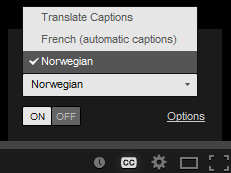
Attēls: titru uzskaitījums, franču (automātiskie titri), norvēģu.
Ja video ir pievienoti titri, jūs varat pārbaudīt:
vai titri parādās sinhroni runātajam saturam;
vai tiek identificēti cilvēki tad, kad viņi runā;
vai video ir iekļautas svarīgas skaņas, neskaitot dialogus ( piemēram, soļi, durvju aizvēršanu, stikla plīšanas troksnis).
Noraksts (transcript)
Labākā prakse ir nodrošināt gan titrus, gan norakstus, lai gan ne vienmēr tie ir nepieciešami. Norakstu nodrošināšanai ir daudz priekšrocību gan cilvēkiem ar invaliditāti, gan tīmekļa vietņu īpašniekiem.
Norakstiem jābūt viegli atrodamiem audio vai video tuvumā un arī pie saitēm uz audio vai video.
Pārbaudiet, vai norakstos ir iekļauta visa audio informācija, ieskaitot dialogus starp runātājiem un visas citas svarīgās skaņas, piemēram, soļi, durvju aizvēršana, stikla plīšanas troksnis utt.
Video norakstam ir jānodrošina visa audio un vizuālā informācija, lai cilvēks, lasot šo tekstu, varētu saņemt visu video saturu.
Audio apraksts (audio description)
Audio apraksts (dažreiz dēvēts par aprakstīto video, video aprakstu vai vizuālo interpretāciju) ir svarīgās vizuālās informācijas apraksts, lai tas kļūtu piekļūstams neredzīgiem cilvēkiem. Piemēram, daži videoklipi sākas ar virsraksta tekstu, tajos ir rakstīti runātāju vārdi vai ilustrācijas. Šī vizuālā informācija ir jāsniedz arī cilvēkiem, kas nevar redzēt video.
To var nodrošināt divos veidos.
Audio apraksts. Audio celiņā iekļauts kāds, kurš apraksta svarīgo vizuālo informāciju. Audio apraksts var tikt iekļauts galvenajā video vai var tikt nodrošināts atsevišķā video.
Teksta noraksts. Tas ietver jēgpilnas vizuālas informācijas aprakstu ( tas ir kaut kas līdzīgs scenārijam).
Kamēr pārējās pārbaudes šajā lapā koncentrējas uz īpašiem sekmīguma kritērijiem WCAG 2.0, šī pārbaude ir daudz plašāka. Tā palīdz saprast, cik atšķirīgi daļa cilvēku redz tīmekļa lapas.
Lai pārbaudītu pamatstruktūru, jums ir jāplūko tīmekļa lapabez attēliem, stila un izkārtojuma.
Tīmekļa lapas bieži tiek veidotas ar vairākām kolonnām, sadaļām, krāsām un citiem vizuāliem aspektiem, kas palīdz organizēt informāciju cilvēkiem, kuri redz lapu tādu, kāda tā tiek rādīta ekrānā pēc noklusējuma. Taču visi cilvēki neredz lapas vienādi. Neredzīgi cilvēki klausās, ko lasa ekrāna lasītāji, vai lasa lapas ar Braila displeju palīdzību. Daļa cilvēku ar vāju redzi, lai varētu izlasīt informāciju, maina lapas parādīšanās veidu ekrānā, piemēram, pāveido no vairākām kolonnām uz vienu, maina teksta lielumu utt.
Būtiski, kā lapa strādā, kad tā tiek “linearizēta” vienā kolonā un tiek mainīts tās attēlojums (skatīt zemāk redzamajos attēlos).
Attēlos parādīta linearizēta un mainīta lapu attēlošana erkrānā. Uzklikšķiniet, lai redzētu attēlus.
Attēlā A redzams noklusējuma attēlošanas veids ekrānā: trīs kolonnas ar navigāciju kreisajā pusē.
Attēls A
Attēlā B redzama lapa, kas ir linearizēta vienā kolonnā, ar augšpusē izvietotu navigāciju.
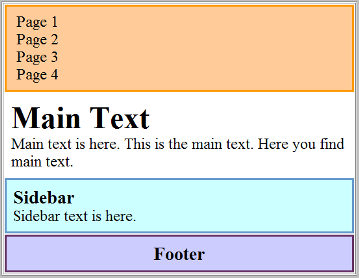
Attēls B
Attēlā C ir linearizēta lapa ar navigāciju apakšā. Sadaļu kārtība ( piemēram, apakšējā vai apakšējā daļā izvietota navigācija) ir atkarīga no lapas izstrādes, jo parasti lietotājam nav iespējas kontrolēt secību.
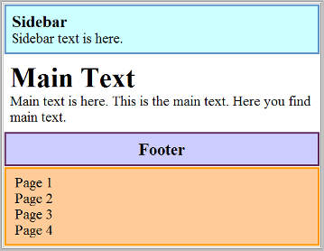
Attēls C
Attēlā D redzama linearizēta lapa ar izslēgtiem stiliem. Kad jūs sekosiet pamatstruktūras pārbaudes soļiem (skatīt zemāk), jūsu lapa izskatīsies aptuveni šādi.
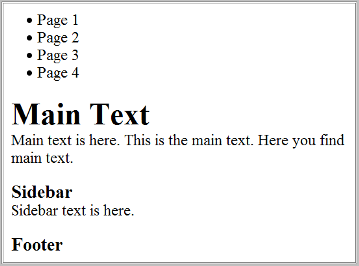
Attēls D
Attēlā E redzama lapa, kurā izmaiņas varētu būt veicis vājredzīgs cilvēks, lai tā kļūtu vieglāk lasāma, piemēram, galvenais teksts ir pārveidots ļoti liels, kājenes teksts - ļoti mazs, bet virsraksti tiek rādīti atšķirīgās krāsās.
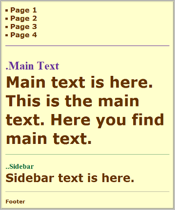
Attēls E
Lai arī ir noderīgi, ka tīmekļa lapu pārbauda pieredzējis ekrāna lasītāja lietotājs, ikviens var gūt sākotnēju priekšstatu, ar kādiem šķēršļiem potenciāli var saskarties ekrāna lasītāju lietotāji un citi cilvēki, kuri maina lapas attēlošanas veidu.
Sekojot zemāk uzskaitītajiem soļiem, jūs uzzināsiet, kā atspējot attēlus un ierastos lapas parādīšanas stilus un kā linearizēt lapu, lai pārbaudītu lapas struktūru.
Piezīmes.
Kad datu tabulas tiek linearizētas, tām zūd nozīme. Par to nav jāraizējas, jo ekrāna lasītājiem ir funkcionalitāte, kas dod iespēju izmantot datu tabulas ( ja tās ir pareizi atzīmētas lapu kodā).
PPD piedāvā skaidru piemēru, kā pamatstruktūras pārbaude atklāj šķēršļus piekļūstamībai. ( Tas ir arī aizraujoši, un mēs aicinām to noteikti izmēģināt. Sekojot zemāk redzamajām PPD instrukcijām.)
Kas ir jādara?
Izveidojiet lapas pamatstruktūras skatu, sekojot zemāk redzamām instrukcijām „Pamatstruktūras pārbaude”. Tas ir nepieciešams, lai:
izslēgtu attēlu rādīšanu un parādītu tekstuālās alternatīvas;
izslēgtu stila lapas (CSS), kas nosaka lapas izkārtojumu, krāsas un citu noformējumu;
linearizētu lapas vai tabulas ( atkarībā no rīkjoslas).
Kas ir jāpārbauda?
Pārbaudiet, vai informācija ir saprotama, ja to lasa redzamajā secībā,. Piemēram, vai virsraksti ir tieši virs informācijas, uz kuru tie attiecas. (Liniarizētām datu tabulām nav nepieciešama jēga).
Pārbaudiet, vai tekstuālās alternatīvas piedāvā atblstošu informāciju attēliem, kuri nav redzami ( skatīt sadaļu par attēlu tekstuālajām alternatīvām).
Pārbaudiet, vai informācijas blokiem ir skaidri virsraksti ( skatīt šajā lapā sadaļu “Virsraksti ). Ja navigācijai, galvenajam saturam un citām sadaļām ir atbilstoši virsraksti, cilvēliem ir vieglāk atrast informāciju.
Pamatstruktūras pārbaude
Pamatstruktūras pārbaude ar IE WAT.
Atveriet jaunu lapu, kuru vēlaties pārbaudīt.
Rīkjoslā atlasiet izvēli Attēli ( Images), tad Noņemt attēlus ( Remove Images).
Vai uz klaviatūras nospiediet Ctrl+Alt+4 un ar lejupvērsto bultu uz Noņemt attēlus.
Rīkjoslā atlasiet CSS un Atspējot CSS (Disable CSS).
Vai uz klaviatūras spiediet Ctrl+Alt+3 un ar lejupvērsto bultiņu uz Atspējot CSS.
Rīkjoslā atlasiet Tabula, un pēc tam Linearizēt.
Pamatstruktūras pārbaude ar WebDey rīkjoslu.
Atveriet lapu, kuru vēlaties pārbaudīt.
Rīkjoslā atlasiet Attēli ( Images),Atspējot attēlus (Disable Images) un Atspējot visus attēlus (Disable All Image)
Vai nospiediet uz tastatūras Alt + T, W (uz Tīmekļa Attīstītāja paplašinājums (Web Developer Extension)) , I, D, D.
Rīkjoslā atlasiet CSS, pēc tam Atspējot stilus (Disable Styles) un pēc tam Atspējot visus stilus (Disable All Styles)
Vai arī spiediet uz tastatūras Alt + T, W (uz Tīmekļa Attīstītāja paplašinājums), S, D, D.
Rīkjoslā atlasiet Dažādi (Miscellaneous ) un pēc tam Linearizēt lapu( Linearize Page)
Vai arī spiediet uz tastatūras Alt + T, W (uz Tīmekļa Attīstītāja paplašinājums), M, I.
Pamatstruktūru pārbaude, izmantojot jebkuru no pārlūkprogrammām
Lielākā daļa pārlūkprogrammu piedāvā iespēju izslēgt attēlus un izvēlnēs atspējot CSS.
Piemēriam:
Opera
Skatīt ( View) > Attēli ( Images)> Rādīt attēlus ( Show Images).
Vai Alt + V, I, S.
Skats ( View)> Stils (Style) > Lietotāja režīms (User Mode) vai Alt + V, S, U.
Safari
Ja izvēlņu joslā nav redzama izvēlne Izstrāde ( Develop), ieslēdziet to:
sadaļā Preferences noklikšķiniet uz Papildu ( Advanced);
atzīmējiet izvēles rūtiņu Rādīt Izstrādes izvēlni izvēļņu joslā(Show Develop menu in menu bar).
Izstrāde (Develop) > Atspējot attēlus (Disable Images).
Vai Ctrl + F2, D, lejupvērstā bultiņa uz Atspējot attēlus.
Izstrāde ( Develop)> Atspējot stilus (Disable Styles.)
Vai Ctrl + F2, D, lejupvērstā bultiņa uz Atspējot stilus.
Pamatstruktūras pārbaude ar PPD (pirms un pēc demonstrācijas)
Vispirms izmantojiet piekļūstamo mājas lapu - www.w3.org/WAI/demos/bad/after/home, un ar vienu no iepriekš minētajām iespējām izslēdziet attēlus, atspējojiet CSS un linearizējiet šo lapu. Ievērojiet, ka sadaļā “Welcome to CityLights” ir 3 virsraksti, un zem katra no tiem ir kopsavilkuma teksts.
Pēc tam izmantojiet nepiekļūstamo mājas lapu: www.w3.org/WAI/demos/bad/before/home. Ar vienu no augstāk minētajām iespējām izslēdziet attēlus, atspējojiet CSS un linearizējiet lapu.
Atrodiet virsrakstu “Welcome to CityLights”. Ievērojiet, ka to ir izdarīt daudz grūtāk, jo tas nav atzīmēts lapas kodā kā virsraksts.
Ievērojiet, ka 3 rakstu virsraksti ir kopā un arī raksta teksti ir kopā. (Lai būtu jautrāk, pamēģiniet izlasīt šo tekstu).
Lai pārbaudītu formas, izmantojiet nepiekļūstamo lapu: www.w3.org/WAI/demos/bad/before/survey. (Piemērs ir vieglāk redzams, ja izmantojat IE WAT.) Pievērsiet uzmanību, ka radio pogu nosaukumi ( label) ir atsevišķi no pogām. Iemesls tam ir nepareizi izmantotas izkārtojumu tabulas (layout tables).
Turpmākie soļi
Tagad, kad jums ir priekšstats par piekļūstamības problēmām tīmekļa vietnēs, jūs varat :
dalīties jūsu atklājumos ar kādu, kas var novērst šos šķēršļus piekļūstamībai;
ierosināt pilnīgu piekļūstamības novērtēšanu.
Dalīšanās ar atklājumiem
Lapā “Sazināšanās ar organizācijām par nepiekļūstamām tīmekļa vietnēm” ir norādījumi, kā ziņot par piekļūstamības problēmām. Tie ir paredzēti cilvēkiem, kas nestrādā organizācijās, kurām pieder tīmekļa vietnes, tomēr tajos ir informācija, kas varētu būt noderīga arī šo organizāciju darbiniekiem, īpaši, sadaļas: “Ievads”, “Apsverot savu pieeju” un “Avoti papildu informācijai.”
Šajā lapā minētās pārbaudes nav galīgas: tīmekļa lapa šķietamivar iziet šīs pārbaudes, tomēr tajās tāpat var būt šķēršļi piekļūstamībai.
Šī lapa aptvertikai dažus no piekļūstamības aspektiem. Ir vairāki piekļūstamības aspekti, kas nav iekļauti vienkāršajās pārbaudēs, piemēram, saites, datu tabulu atzīmes, paļaušanās uz krāsu risinājumiem un daudzi citi.
Lai pilnīginovērtētu lapas piekļūstamību, jums būs nepieciešama papildu izpēte. Norādījumi ir pieejami:
novērtēšanas metodoloģija un ziņojumu ģenerētājs:
WCAG-EM pārskats: tīmekļa vietnes pieejamības atbilstības novērtēšanas metodoloģija,